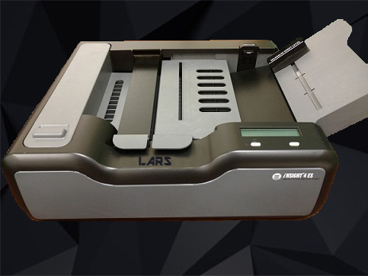
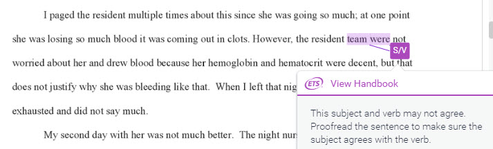

About LARS
What is LARS?
 -LARS, or Learning Adaptive Resource System, is a grading AI with a newly founded function of assessing essays. Along with its normal scantron aspects, LARS allows for the grading of essays and free-response questions. Technology such as the E-Rater and Project Essay Grade (PEG) have inspired us to make this new function. The difference between LARS and those technologies are that LARS is able to check the validity of empirical evidence and facts. Using grading methods including Latent Semantic Analysis (LSA), Probabilistic Latent Semantic Analysis (PLSA) and Latent Dirichlet Allocation (LDA), LARS is able to predict and check the accuracy of the claims made in the essays (Kakkonen et al.). This function puts LARS above all other grading AI.
LARS has many implications in the educational environments. You are able to use and develop multi-formatted tests in essays, multiple-choice, free-response, etc (Terian). This allows you to measure student performance in a variety of subjects with ease. Additionally, it ensures consistent grading throughout the assessment. Grading essays leads to inconsistencies in grading including biases and human error. But using LARS allows for all students to have equal scoring guidelines.
What are the current technologies of LARS?
 -LARS utilizes Scantron technology for multiple-choice grading in order to be useful in all forms of grading. Also, methods in E-Rater allow LARS to check for grammar mistakes and takes into account elaboration in work (Winerip). Scores in convention and style can be evaluated using this technology.